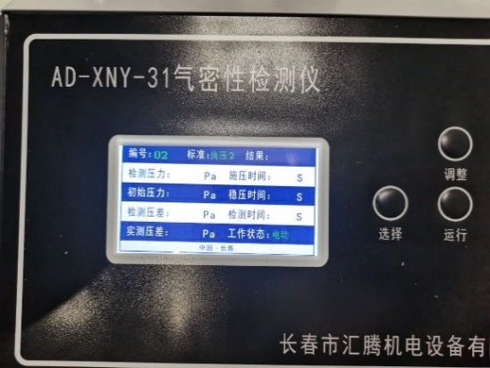
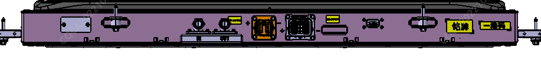
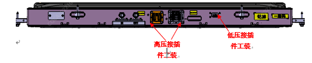
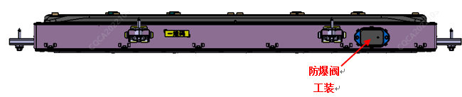

（1）水道气密测试 ①作业前Ⅰ准备好气密封堵工装（水冷接口气密工装、水冷接口封堵工装）；Ⅱ连通设备电源，设备开机；Ⅲ如图4.5.1所示，设置气密参数值检测压力0.2MPa±0.01MPa，压力达到设定值后，稳压时间60s，压差检测时间10s，要求泄露值≤5ml/min

②作业中Ⅰ将封堵工装、气密工装依次插接到电池包对应位置，：

Ⅱ将设备测试气管连接到气密工装上；Ⅲ按下设备运行按钮，开始测试，根据设备反馈测试结果再进行下一步工作；③作业后Ⅰ断开测试气管，将气管卷好放入存放箱内；Ⅱ依次拆下封堵工装（按连接的逆顺序进行），放入工装存放箱内。 （2）整包气密测试 ①作业前Ⅰ准备好气密封堵工装（高压接插件封堵工装、低压接插件封堵工装、防爆阀封堵工装等）；Ⅱ连通设备电源，设备开机；Ⅲ如图4.5.1所示，设置气密参数值检测压力-7KPa，压力达到设定值后，稳压时间60s，压差检测时间60s，要求泄露值≤170Pa. ②作业中Ⅰ将封堵工装依次插接到电池包对应位置，如图4.5.3所示


Ⅱ将设备测试气管连接到封堵工装上；Ⅲ按下设备运行按钮，开始测试，根据设备反馈测试结果再进行下一步工作；注意事项：测试过程中不得触碰设备按钮、气管接头及封堵工装。气密测试不合格进行漏点排查时，需用封堵工装对防爆阀进行封堵，再对整包进行充气，当发现上盖有轻微凸起变形后停止充气，用肥皂水涂抹在上盖与箱体搭接缝、接插件安装面、箱体焊缝等区域，观察有无气泡或气泡变大现象产生。③作业后Ⅰ断开测试气管，将气管卷好放入存放箱内；Ⅱ依次拆下封堵工装（按连接的逆顺序进行），放入工装存放箱内